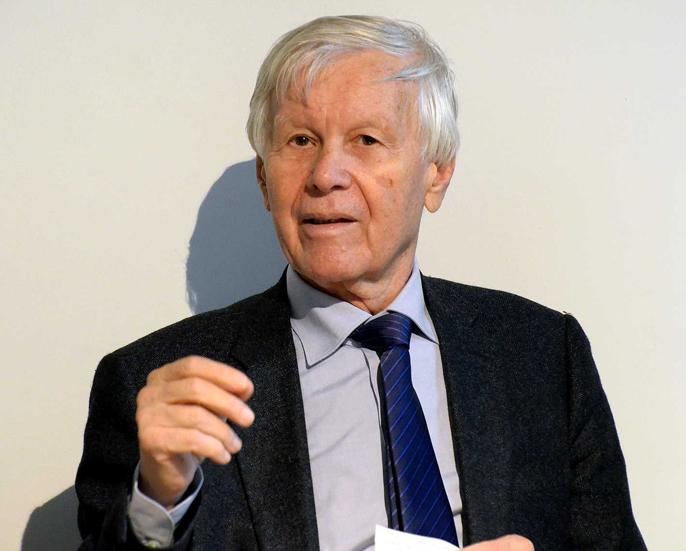
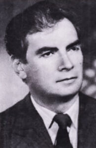

Eugen Simion, George Călinescu. A cunoaște prin iubire:

În acest studiu, Simion explorează modul în care Călinescu a integrat iubirea de literatură în activitatea sa critică. Simion subliniază că, pentru Călinescu, critica literară nu era doar un proces obiectiv, ci și o formă de empatie intelectuală.
„A cunoaște prin iubire” este un eseu al criticului și istoricului literar român Eugen Simion, care explorează relația dintre cunoaștere și iubire în contextul culturii și literaturii. Eugen Simion a fost un teoretician care a analizat profund modul în care sentimentele și emoțiile, în special iubirea, joacă un rol esențial în procesul de înțelegere și percepție a lumii.
Ideea centrală a eseului este că iubirea nu este doar un sentiment sau o emoție, ci și un mod de a cunoaște și de a înțelege realitatea. Eugen Simion susține că iubirea apropie oamenii de adevăruri mai profunde și îi ajută să perceapă aspectele subtile ale existenței care, altfel, ar rămâne ascunse sau inaccesibile prin intermediul rațiunii pure. El vede iubirea ca pe o formă de intuiție, o cale prin care putem înțelege natura umană și universul dintr-o perspectivă mai umană și mai profundă.
În contextul literar, acest mod de a cunoaște prin iubire este strâns legat de experiențele artistice și de interpretare. Eugen Simion subliniază că marii scriitori și poeți au folosit adesea iubirea nu doar ca temă a operelor lor, ci și ca un instrument pentru a descoperi și a dezvălui esențele ascunse ale vieții. Astfel, actul creativ devine o formă de cunoaștere prin iubire, în care artistul își transpune trăirile și percepțiile într-o expresie care ajunge direct la inima și la mintea cititorului.
Fragment semnificativ: „Călinescu a iubit literatura română în ansamblul ei și a tratat-o ca pe un edificiu viu, în care fiecare autor și fiecare operă contribuie la construcția unei identități culturale comune.”
Ion Bălu, Viața lui George Călinescu:

Biografia lui Călinescu oferă un context istoric și personal asupra activității sale critice și literare. Detaliile despre viața și cariera sa aduc lumină asupra motivațiilor din spatele marilor sale opere.
,,Viața lui George Călinescu, Ion Bălu" este o biografie detaliată a marelui critic și istoric literar român George Călinescu, scrisă de criticul și biograful Ion Bălu. Această lucrare oferă o perspectivă amplă asupra vieții, carierei și contribuțiilor semnificative ale lui Călinescu la literatura română și la cultura în general.
Ion Bălu își propune să exploreze nu doar activitatea literară și academică a lui George Călinescu, ci și latura umană a acestuia. Cartea oferă detalii despre viața personală a lui Călinescu, despre influențele și provocările pe care le-a întâlnit de-a lungul vieții sale, precum și despre felul în care contextul istoric și social al României din secolul XX a influențat cariera sa. Se vorbește despre implicarea lui Călinescu în viața culturală a vremii, despre relațiile sale cu alți scriitori și critici literari, dar și despre momentele-cheie care au marcat evoluția gândirii și a operei sale.
Ion Bălu acordă o atenție specială operei literare a lui George Călinescu, explorând atât activitatea sa de critic literar, cât și cea de prozator. Se discută despre lucrări fundamentale precum ,,Istoria literaturii române de la origini până în prezent" și romane precum ,,Enigma Otiliei" și ,,Scrinul negru," analizându-se felul în care Călinescu a influențat literatura română și modul în care a reușit să îmbine critica literară cu creația propriu-zisă.
Lucrarea lui Ion Bălu este apreciată pentru rigoarea sa documentară și pentru capacitatea de a contura o imagine completă a personalității complexe a lui George Călinescu, evidențiind nu doar geniul său literar, ci și contradicțiile și dilemele cu care s-a confruntat în viața sa.
Un pasaj relevant: „Călinescu a văzut critica literară nu doar ca o analiză a textelor, ci ca o formă de modelare a spiritului public. Prin această prismă, el a reușit să creeze un canon național, un adevărat monument al literaturii românești.”
Nicolae Manolescu, Istoria critică a literaturii române:
Manolescu compară metodele lui Călinescu cu cele ale altor critici literari români, oferind o perspectivă modernă asupra operei sale. Lucrarea este utilă pentru a înțelege cum moștenirea lui Călinescu a fost preluată și reevaluată.
În Istoria critică a literaturii române a lui Nicolae Manolescu, George Călinescu este analizat atât ca un critic și istoric literar, cât și ca romancier și personalitate culturală. Manolescu oferă o evaluare amplă și complexă a contribuțiilor lui Călinescu la literatura română, subliniind impactul său semnificativ asupra dezvoltării criticii și istoriei literare din România. Nicolae Manolescu recunoaște meritele lui Călinescu în ceea ce privește organizarea și interpretarea literaturii române, menționând că Istoria literaturii române de la origini până în prezent a lui Călinescu este o lucrare fundamentală, care a definit și a influențat direcția criticii literare românești timp de decenii. Manolescu apreciază stilul său expresiv, erudiția sa vastă și capacitatea de a crea portrete literare memorabile ale scriitorilor analizați. Călinescu a reușit să ofere o viziune sintetică și integratoare asupra literaturii române, combinând talentul său de povestitor cu analiza critică profundă.
Totuși, Manolescu aduce și unele critici la adresa lui Călinescu, evidențiind anumite limite ale perspectivei sale. El observă că Călinescu avea uneori tendința de a fi subiectiv și că interpretările sale erau influențate de propriile sale gusturi literare și de convingerile estetice. De asemenea, Manolescu subliniază faptul că metoda lui Călinescu, bazată pe un amestec de impresionism și erudiție, nu întotdeauna a respectat rigurozitatea științifică pe care o cere critica literară modernă.
Citat: „Deși metodele lui Călinescu au fost, în mod inevitabil, criticate și actualizate de-a lungul timpului, el rămâne arhitectul fundamental al unei structuri critice pe care orice istoric literar român trebuie să o ia în considerare.”
Aceste fragmente evidențiază contribuția lui George Călinescu la formarea unei conștiințe literare naționale și arată cum a modelat critic și estetic literatura română prin operele și reflecțiile sale.